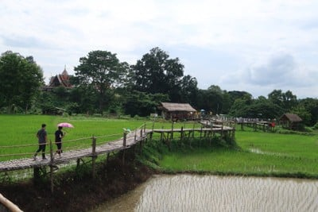

สะพานบุญวัดพระธาตุสันดอน

ในช่วงเดือนกรกฎาคม คือ ช่วงฤดูไถหว่าน จะได้เห็นภาพชีวิตดั้งเดิมของวิถีชาวนา สะพานแห่งนี้เกิดมากจากแรงศรัทธาจากชาวบ้านที่ได้ร่วมใจกันบริจาคที่นาของตัวเองสร้างสะพานเพื่อใช้สัญจรไปมาเพื่อไปทำบุญที่วัด ชาวบ้านขับรถไถ ปักต้นกล้าข้าวบนที่นาไปตามปกติ บนสะพานมีนักท่องเที่ยวเดินข้ามไปมาถ่ายภาพความสวยงามของสะพาน แถมได้ชมความเรียบง่ายตามสไตล์วิถีชนบทไปด้วย
Back